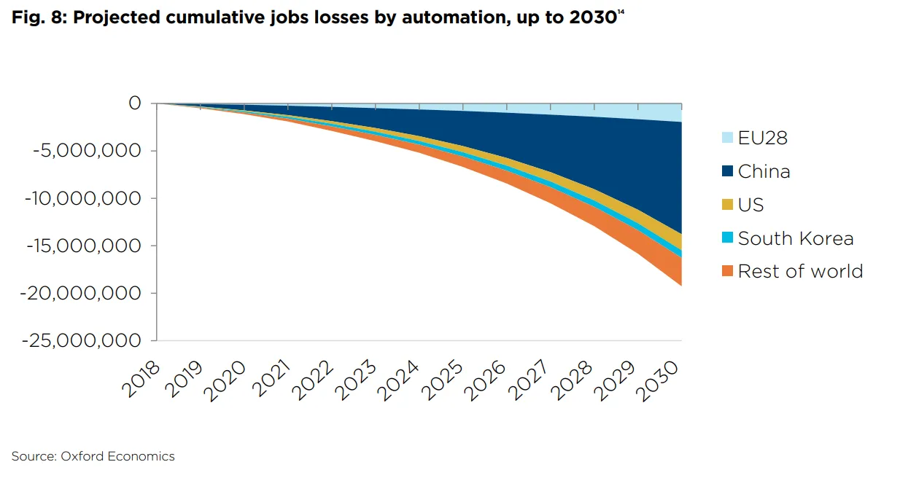

Note : n’étant ni économiste ni sociologue, je ne vise qu’à apporter quelques pistes de réflexion qui, j’espère, seront au mieux source de lectures approfondies, au pire source de critiques hardies.
Ce que nous appelons “travail” est une invention de la modernité. […] S’il nous arrive de parler du “travail ménager”, du “travail artistique” ou du “travail d’autoproduction”, c’est en un sens fondamentalement différent de ceux-ci qu’a le travail placé par la société au fondement de son existence, à la fois moyen cardinal et but suprême.
C’est en ces mots qu’André Gorz commence la première partie de son essai relatif aux Métamorphoses du travail. Le travail dont nous parlons, ce travail qui nous habille d’un statut social et nous permet de recevoir de l’argent, est la source essentielle de la vie dans la société française. Il correspond à cette activité où nous faisons profiter nos compétences physiques et/ou intellectuelles contre de l’argent.
En général, un·e travailleur·euse est rémunéré·e en fonction de son temps de travail, et potentiellement en fonction de sa productivité. Iel vit professionnellement en suivant un cycle de travail défini sur une à quatre semaines (d’après la législation française). Ce cycle est réitéré et peaufiné durant l’intégralité de sa carrière, sauf cas de vacances, de maladies et/ou d’événements exceptionnels qui vont réduire le nombre de jours travaillés.
Dans le modèle actuel, un·e travailleur·euse peut travailler plus que le nombre d’heures de son cycle, lui faisant bénéficier d’un meilleur salaire ou d’un temps de congé plus élevé. Mais, dans tous les cas, iel reste coincé dans son cycle jusqu’à l’arrivée à la retraite (qui s’éloigne de plus en plus aujourd’hui, faute de la médecine) ou, plus logiquement, jusqu’à l’arrivée d’un raz-le-bol du quotidien, par la manifestation d’une démission, de pathologies psychologiques ou encore de burn-outs.
Le problème n’est pas la faute du travail : il est un devoir pour prétendre à être une personne de la société. Je donne mes compétences à la sphère publique, donc j’ai le droit d’exister dans cette sphère publique. Cependant, même s’il peut être un vecteur d’épanouissement pour certaines personnes, il n’en sera jamais le cas pour toute la population, là où certains politiques cherchent à nous faire croire l’inverse.
L’épanouissement de chacun·e passe souvent par d’autres activités regroupées sous l’étiquette de loisirs. On pourrait définir ces activités comme ayant pour objectif de consommer notre temps libre sans but économique, par opposition au travail qui génère de l’argent avec du temps libre. Les loisirs sont très souvent une part importante du développement de soi, car ils permettent de créer des relations sociales, de développer de nouvelles compétences, d’acquérir d’autres connaissances, etc.
Là où le bât blesse, c’est que le partage de notre vie entre travail et loisir se fait en suivant des cycles adaptés pour le travail et non pour le loisir. En tant qu’individu, si je souhaite prendre du temps pour découvrir une nouvelle langue ou apprendre un nouvel instrument, je ne peux qu’effectuer des activités qui me le permettent entre mes horaires de travail. Je n’ai cependant pas la possibilité de m’investir complètement dans un projet de vie, sauf si je prends une année sabbatique dont le succès reposera sur les économies que j’ai eu le temps de mettre de côté.
Briser les cycles : le modèle de Gorz
André Gorz, philosophe et journaliste français Le modèle de Gorz (que je nomme ainsi car il s’agit d’un modèle de société dont il est l’auteur dans Metamorphoses du travail) est une théorie reposant sur une autre conception des cycles de travail.
Sa théorie est qu’un·e travailleur·euse ne possède plus un cycle de travail réparti sur quelques semaines, mais sur au minimum une année. Iel possède un quota annuel d’heures à effectuer (entre 1600 et 1800 en France), et organise son travail en fonction de ce nombre d’heures. Il est alors possible de créer des plannings de travail permettant d’alterner des semaines de travail intensives avec des semaines de congés.
Un·e travailleur·euse peut donc être beaucoup plus actif·ve au travail pendant une période, de façon à pouvoir profiter de ses loisirs pendant une autre période. La rémunération d’un·e travailleur·euse ne serait donc plus lié à ses heures qu’iel a effectué·e dans le mois, mais correspondrait à 1/12e de son salaire annuel, et ce quelque soit ses horaires. C’est déjà le cas des animateurs et des professeurs, dont leurs temps de travail sont annualisés.
La théorie peut aussi être étendue à un quota de temps à vie, permettant à chacun·e de choisir des longues périodes de travail et de loisirs. On peut comparer cette idée à une sorte de revenu universel, sauf que le revenu serait garanti par le fait que la personne a un devoir de travail envers la société.
Préparer l’avenir : la réduction du temps de travail
Un des problèmes majeurs qui arrive au fur et à mesure de l’évolution est qu’il n’y aura plus assez de travail pour tout le monde. Les avancées dans la robotique et l’intelligence artificielle détruisent des postes de travail au fur et à mesure des années. Une étude menée par l’entreprise Oxford Economics prévoit la perte de 20 millions de postes dans le monde d’ici 2030, sans pouvoir prévoir la suite et les évolutions de l’intelligence artificielle.
 Source : Rise of The Robots, Oxford Economics, p. 22 Ce n’est pas un cas d’urgence, mais il est nécessaire de prévoir une société du futur où chacun puisse travailler pour subvenir à ses besoins. La réponse actuelle souvent proposée par des partis de gauche concernent l’implémentation d’un revenu universel permettant de subvenir aux besoins de base de tout individu.
Une autre théorie possible est tout simplement de réduire le temps de travail en fonction du nombre de postes disponibles. Cela permettrait d’assurer à chacun·e un emploi permettant de vivre, en plus de pouvoir faire grandir les secteurs liés aux loisirs, comme les secteurs culturels et associatifs. Les gens possédant plus de temps pour vivre, il serait donc nécessaire de trouver des activités dans lesquelles dépenser ce temps.
De plus, la réduction du temps de travail n’implique pas directement de baisse de productivité. D’après cet article de la BBC, plusieurs expériences ont été menées en Nouvelle-Zélande, en Suède et en Islande sur des travailleurs·euses dont le temps de travail a été réduit. Aucune réduction de productivité n’a été constatée, et il a même été remarqué une amélioration dans le service client d’une entreprise.
Cette théorie de réduction du travail s’adapte parfaitement avec le modèle de Gorz : il suffit simplement de réduire le quota annuel de travail par personne pour pouvoir moduler le nombre de postes disponibles. Les plannings des travailleurs·euses seraient alors plus intermittents, avec de plus longues périodes pour les loisirs.
Comme une alternative à la rémunération monétaire
Tout·e travailleur·euse récupère un salaire de son travail. Au fur et à mesure de sa carrière, iel reçoit de nouveaux avantages en nature et/ou monétaires.
Une application possible de la réduction du temps de travail serait que les entreprises puissent proposer, dans le cadre des avancées de carrière, la réduction du temps de travail du travailleur·euse.
Critiques du modèle de Gorz
Je trouve le modèle de Gorz fascinant, mais malheureusement, des interrogations restent en suspens :
Comment, en tant qu’entreprise, gérer l’intermittence de l’emploi des travailleurs·euses ?
Tous les modèles de gestion des entreprises sont basés sur le fait d’être au même endroit au même moment. Je pense qu’il y a déjà des éléments de réponses dans les méthodes de gestion du télé-travail, mais qu’il est nécessaire de pousser la réflexion non plus sur un problème géographique mais temporel.
Quelles sont les règles à fixer pour ne pas tomber dans un modèle de sur-exploitation des travailleurs·euses ?
La mise en place d’un quota a minima annuel nécessiterait une refonte du Code du travail, et de définir des règles pour éviter à un·e travailleur·euse de travailler 35 heures en 2 jours, de travailler 6 mois d’affilée avec 10 jours de repos etc.
Il s’agirait d’un travail extrêmement important à mener au cours de discussions entre syndicats et politiques, nécessitant probablement de multiples expérimentations afin de déterminer les limites des quotas de travail.
Est-ce qu’il est nécessaire de fixer des objectifs de quota minimaux pour assurer le devoir entre travailleur·euse et société ?
De mon point de vue, il serait nécessaire de régir les quotas de travail par des paliers à atteindre au bout d’une période fixe pour éviter qu’une dette trop forte se crée entre la société et le travailleur·euse. Cela casserait une partie de la flexibilité de ce modèle, mais permettrait d’avoir une sécurité de la société vis-à-vis des individus.
André Gorz nous a livré une vision sociétale qui a le mérite de penser aux travailleurs·euses, et à leur conception de la vie, partagée entre le devoir qu’implique la société (le travail) et le droit qu’elle leur offre (le loisir). L’intermittence que propose son modèle est une solution intéressante à des problèmes bien actuels.
Nous vivons une époque complexe : les politiques des gouvernements continuent de se focaliser sur l’emploi sans pour autant remettre en question sa place dans la société d’aujourd’hui. Au lieu de tester de nouvelles visions du monde, on se cantonne à des idées recyclées encore et encore. Il est nécessaire que nous allions de l’avant, et que nous proposions des modèles où puissent s’unir devoir du travail et droit du loisir.
---
Merci d’avoir lu cet article.
Je tenais, comme d’habitude, à remercier Jean “HackJack” B. qui, une fois encore, a sauvé cet article de la débauche orthographique.
Si jamais vous avez d’autres idées ou des lectures relatives au domaine, je serai curieux d’y jeter une partie de mon esprit. N’hésitez pas à en faire part !
Et comme d’habitude, le gif de la fin : Cute lizard thanks you for reading